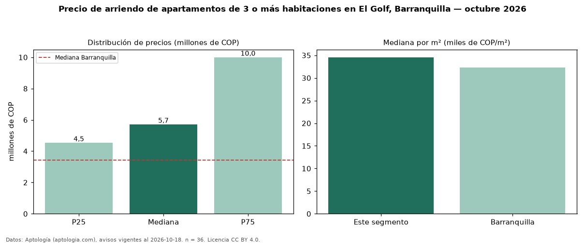

Precio de arriendo de apartamentos de 3 o más habitaciones en El Golf, Barranquilla — octubre 2026
COP 5,71 millones al mes es el canon mediano de apartamentos de 3 o más habitaciones en arriendo en El Golf, Barranquilla (n = 36 avisos). Frente a la mediana de Barranquilla para apartamentos de 3 o más habitaciones (COP 3,43 millones), queda 67 % por encima. Por metro cuadrado, la mediana es COP 34.562/m² al mes (n = 32 avisos con área), 7 % por encima de Barranquilla (COP 32.296/m²). Son 77 % de los 47 avisos de apartamentos en arriendo de la zona, cuya mediana general es COP 4,90 millones (+17 %). Con el precio por m² de venta del mismo segmento (COP 5,00 millones/m²), la rentabilidad bruta implícita es 8,3 % anual (aproximación con medianas de ofertas distintas). El área mediana anunciada es 214 m². La administración mediana declarada es COP 1,21 millones al mes (n = 21), aparte del canon. La mitad central de los avisos va de COP 4,54 millones a COP 10 millones (razón 2,2), una dispersión alta. Datos: Aptología (aptologia.com), CC BY 4.0 — https://www.aptologia.com/arriendo/barranquilla/el-golf. Archivos: PDF, CSV con las cifras y gráfica PNG.

| Avisos únicos | 36 |
|---|---|
| Percentil 25 | COP 4.537.500 |
| Mediana | COP 5.714.800 |
| Percentil 75 | COP 10.000.000 |
| Mediana por m² | COP 34.562 |
Fuente: avisos vigentes de portales inmobiliarios recopilados por Aptología, deduplicados (mínimo 30 avisos únicos por celda). Precios pedidos, no cerrados. Fecha: 2026-10-18.